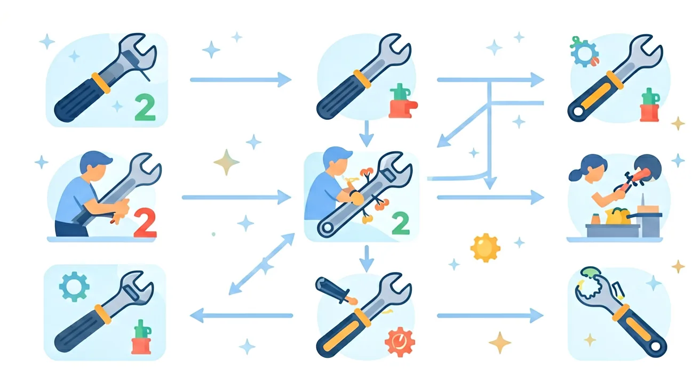

先独立作答，再点选项查看对错与错因。
下列哪种工具最适合用来拧紧或松开螺丝？
下列哪种工具最适合用来夹持或剪切物体？
下列哪种工具最适合用来敲打物体？
用来拧紧或松开螺丝的工具是____。
答案：螺丝刀
螺丝刀是专门设计用来拧紧或松开螺丝的工具。
用来夹持或剪切物体的工具是____。
答案：钳子
钳子是专门设计用来夹持或剪切物体的工具。
下列哪种工具最适合用来拧紧或松开螺母和螺栓？
探究不同工具的使用场景和工作原理。
❓ 为什么螺丝刀的头有不同形状？
❓ 锤子能当扳手用吗？
❓ 剪刀为什么能轻松剪开纸？
学完这一课，这些问题你都能自信地回答。
🎯 能说出5种常见工具的名称及用途
🎯 能判断不同场景应使用的工具类型
🎯 能分析工具设计特点与功能的关系
观察工具组成部分，如锤子的锤头和手柄
理解杠杆原理在钳子中的运用
对比螺丝刀一字头和十字头的适用场景
发现剪刀双刃交叉的力学设计
用开瓶器原理解决罐头盖打不开问题
✅ 演示剪刀刃口损伤
💡 混淆剪切材料的硬度限制
✅ 展示弯曲的螺丝刀
💡 不理解金属疲劳极限
口诀：形状配功能，省力又轻松
类比：工具像钥匙，形状不对就打不开锁
拧十字螺丝应该用？
剪厚纸板最适合的工具是？
【升学题】下图工具主要运用了什么原理？
【迁移题】开红酒的木塞可以用？
【真题】哪个工具设计符合人体工学？
And：学生用过剪刀、锤子等工具
But：为什么有些工具用起来更省力？
Therefore：理解杠杆原理在工具中的应用
工具省力的关键是支点位置！比如用撬棍搬石头：当支点离石头近（约10厘米）、离手远（约1米）时，手只要向下压5厘米，石头那端就能抬起50厘米，省力10倍。这就是杠杆原理——动力臂越长越省力。生活中螺丝刀、开瓶器都是这样设计的。
🌍 观察指甲钳：手指按压的地方比刀口长3倍，剪指甲时轻轻用力就能‘咔擦’剪断，和跷跷板长边坐小孩、短边坐大人一个道理！
下图哪种工具最省力？（支点●）
And：学生知道工具能帮忙
But：为什么每年有小朋友被工具伤到？
Therefore：建立使用工具的安全意识
使用工具必须记住‘一看二试三检查’：一看工具是否完好（比如锤头松动会飞出去）；二试功能（美工刀推出1厘米就够用，推出3厘米易划伤）；三检查环境（锯木头前要固定木料）。例如实验室用放大镜时，曾有人没发现镜片裂纹，聚焦阳光时镜片突然爆裂。
🌍 就像你骑自行车前会检查刹车，用工具也要‘体检’：卷尺的卡扣松了会夹手，螺丝刀秃了会打滑伤手腕！
使用生锈的钳子时，最先做什么？
